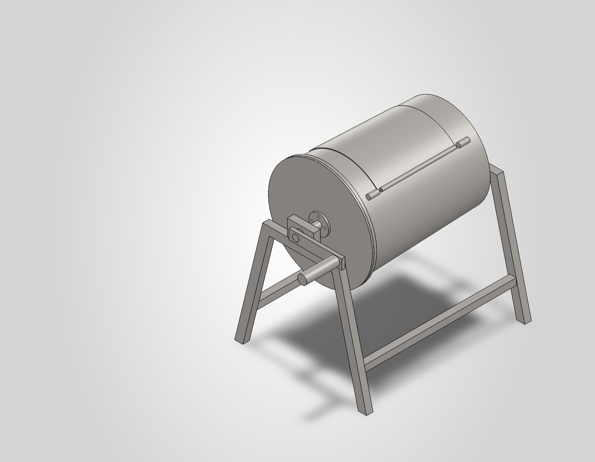
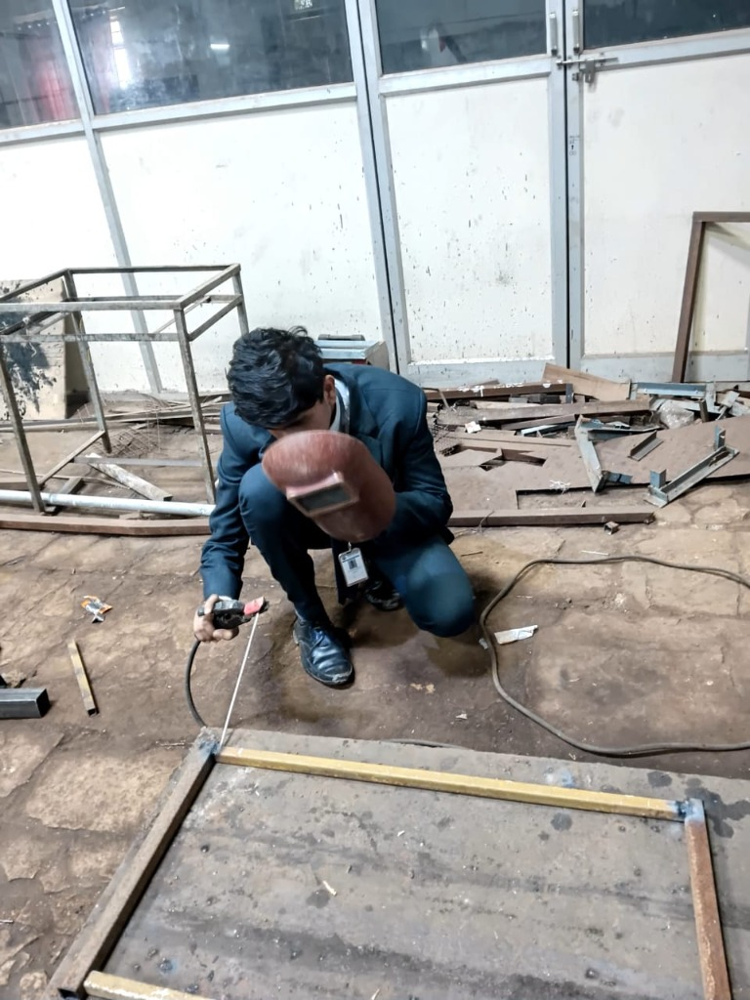
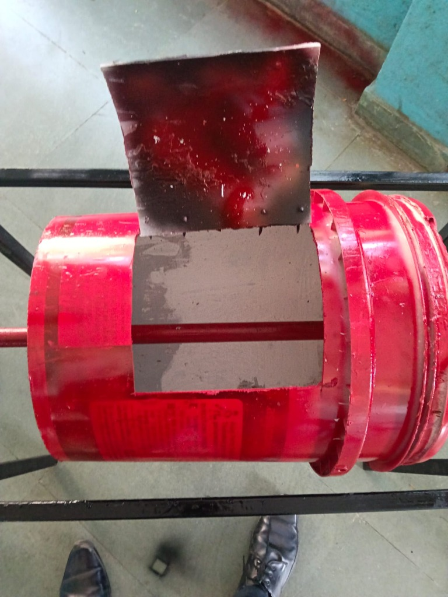
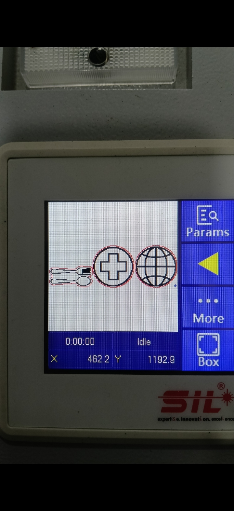
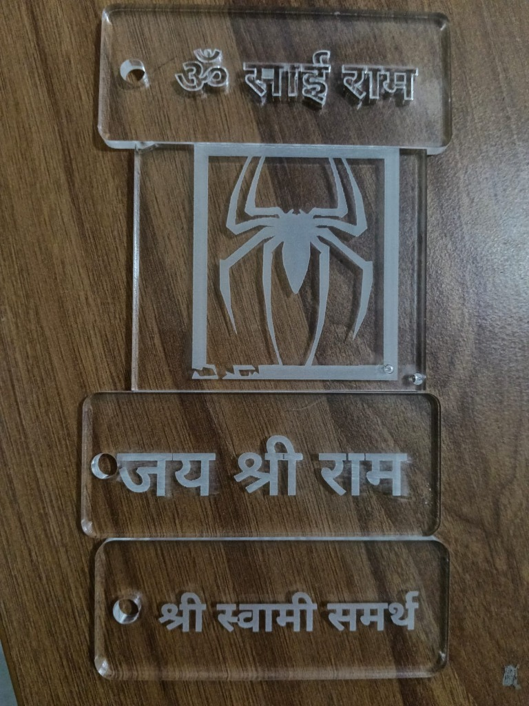

Container
A 20-litre bucket is specified for the physical model. Usable volume, material and mounting details are to be confirmed.
MECHANICAL DESIGN / PHYSICAL MODEL / SUSTAINABLE ENGINEERING
Mechanical Design Physical Model Sustainable Engineering
A student mechanical engineering project focused on developing a physical composting system using a 20-litre bucket and a mechanical mixing arrangement. The project demonstrates practical mechanical design, fabrication, assembly and sustainable waste-management concepts.
Build and model photos supplied

01 — PROJECT INTRODUCTION
The project explores a physical composting-system concept built around a 20-litre bucket and a mechanical mixing arrangement. Its emphasis is on mechanical design, fabrication and assembly.
Team-supplied photos show frame welding and the red-drum physical model. The SolidWorks downloads are provided separately; their correspondence with the photographed model has not been confirmed.
Read the complete engineering briefA 20-litre bucket is specified for the physical model. Usable volume, material and mounting details are to be confirmed.
The mechanical arrangement is intended to redistribute material. Geometry, interfaces and operating method remain to be confirmed.
Workshop photographs document frame fabrication in progress. Dimensions, material and final assembly status are not established.
The CAD files include end-lid and folding-lid components. Fit, closure and final physical configuration require verification.
03 — DIMENSIONED DESIGN & BUILD
The project brief specifies a 20-litre drum capacity. The source notes do not provide verified linear dimensions; no measurements are estimated from photographs.
Linear dimensions, units, tolerances, material sections and inspection results: to be confirmed from approved drawings and the completed model. The 20 L capacity is not a physical dimension.
Open the full project dimension register04 — PROJECT VISUALS
These team-supplied photos show the red-drum physical model and welding work. The supplied SolidWorks files are listed separately and are not presented as a verified match; an interactive preview can be added when the correct model export is available.
The photos document frame welding, a drum detail and the model on its support frame. They do not establish operating safety, composting performance or a match with the supplied CAD files.




Supplied assembly containing the 20-litre drum/pail, frame and support parts, bearing and bush parts, crank/rotor components, and lid components.
Download assemblyKeep this assembly and its referenced part files together when opening the model. Dimensions, materials and correspondence with the physical build remain to be confirmed.
20-litre drum/pail component from the supplied assembly.
Download partEnd-lid component included in the assembly.
Download partFolding-lid component included in the assembly.
Download partRotor-hub/stub component included in the assembly.
Download partCrank-arm component included in the assembly.
Download partCrank-grip component included in the assembly.
Download partStand A-frame component included in the assembly.
Download partLongitudinal brace component included in the assembly.
Download partBearing-block component included in the assembly.
Download partPlain-bush component included in the assembly.
Download partThe relationship of these standalone files to the supplied assembly has not been confirmed.
Additional supplied part file; assembly relationship to be confirmed.
Download partAdditional supplied part file; assembly relationship to be confirmed.
Download part05 — MANUFACTURING & ASSEMBLY
The photographs establish that frame work was underway; they do not establish completion or test readiness.
Review the approved CAD, dimensions, materials and component interfaces. Missing details are to be confirmed.
Record the actual frame materials, joining process and inspection before proceeding with assembly.
Follow the verified assembly sequence and check fit, stability, closure and moving clearances.
Use a documented, safe test plan. No composting performance results are currently claimed.
06 — GARDEN CONNECTION
The project can help explore how suitable organic waste might be processed and, after proper maturation and checks, considered for a garden. This is a proposed educational use, not a verified composting result.
07 — LIMITATIONS & NEXT STEPS
Final dimensions, materials, interfaces, usable capacity and operating method are to be confirmed. The CAD source files document the design only; correspondence with the physical 20-litre build is unverified.
08 — PROJECT TEAM
A student Mechanical Engineering project in sustainable waste management.
2126UMEM1024
2126UMEM1012
PRN not provided
2126UMEM1022
INDEPENDENT MAKERSPACE LEARNING
This learning area is separate from the composting project. Neither laser cutting nor 3D printing was used to make the Smart Composting System.
Learn the vector-design workflow, material checks, supervised test cuts and dimensional inspection. CO2 laser settings are machine- and material-specific.
Prepare and orient a model, select the exact machine and material profile, review the sliced toolpaths, then inspect the printed part for fit and defects.
| Machine | Learning focus | Verified notes |
|---|---|---|
| A1 mini | Compact FDM, calibration, orientation, slicing, and print inspection | 180 × 180 × 180 mm build volume; multi-colour requires compatible AMS lite setup. Manufacturer specs |
| H2D | Dual-nozzle / multi-material workflows and integrated digital fabrication options | Single nozzle: 325 × 320 × 325 mm; dual nozzle: 300 × 320 × 320 mm; total two-nozzle volume: 350 × 320 × 320 mm. Optional 455 nm diode laser is not CO2. Manufacturer specs |
| X1 series | Enclosed CoreXY workflow, monitoring, and material/profile comparison | Compare exact X1 model and current manual before documenting volume, features, or material limits. |
| P1 series | CoreXY workflow, slicer-to-printer process, and configuration comparison | Includes open-frame and enclosed variants such as P1P and P1S; verify the exact model and accessories. |
H2D laser safety: the optional 10 W / 40 W 455 nm diode module is listed as Class 4; the complete H2D system is Class 1 only when protective systems are correctly installed and functioning. This is a different machine configuration and laser type from a CO2 cutter.
No 3D-printing photos were supplied. The four laser-cutting photos below are independent examples and do not document the composting model.


